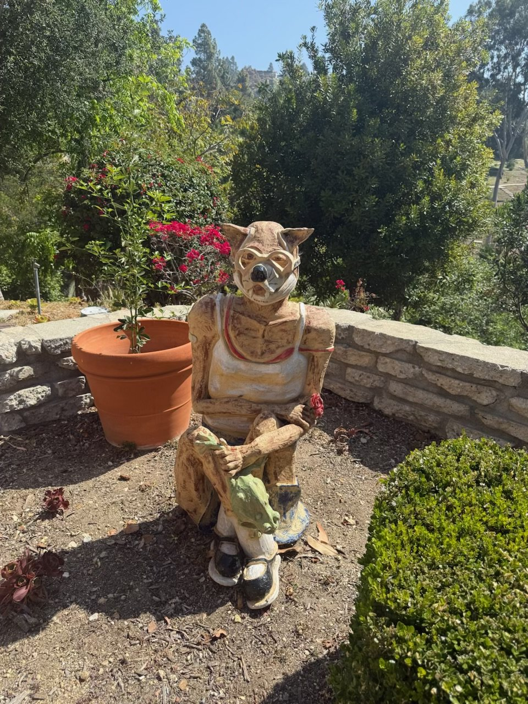
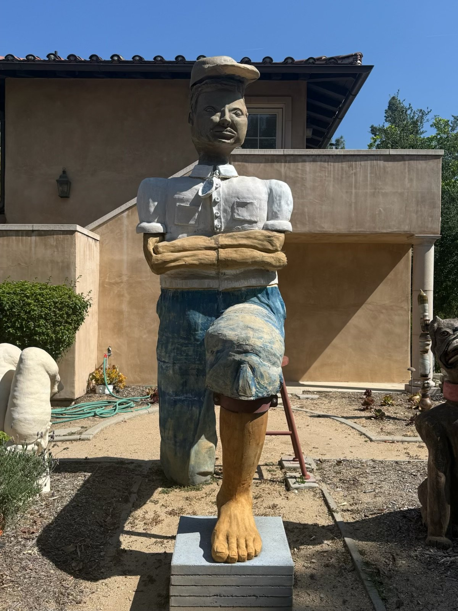

Selected Work
Hand-built clay · 2016 —
A wolf at rest in a tank top and sneakers, rose in hand, lizard on knee — folklore recast in the everyday.

A towering figure resolving into a single monumental bare foot — her largest scale work to date.
Bird forms arranged in monumental formation, shown in Clayfornia at California Botanic Garden.
- Based in
- Claremont, California
- Studio
- Studio 15, AMOCA Ceramics Studio, Pomona — resident artist since 2016
- Medium
- Hand-built clay; figurative & animal forms at large scale
- Community
- Longtime supporter of the arts across the Pomona Valley and Inland Empire
Janell Lewis builds in clay at the scale of life. A longtime resident artist at the AMOCA Ceramics Studio — Pomona’s only clay center, housed in a former bank building — she is known for continually challenging herself toward larger and more ambitious sculpture: standing human figures, oversized animals, forms that meet the viewer eye to eye.
Her work carries a close attention to the ordinary detail — the fold of a jacket pocket, the lacing of a shoe, the curve of a rabbit's ear — rendered with warmth and a quiet sense of humor. In Clayfornia: Ceramic Sculpture in the California Sunshine — fourteen AMOCA studio artists invited to express California’s identity in the state’s quintessential medium — her sculptures stood among native plants at California Botanic Garden and became part of the landscape itself; one was even adopted by nesting birds. The run proved popular enough to be extended through Memorial Day weekend.
[ Artist statement to be supplied — placeholder copy ]
Exhibitions
Selected- 2020–21 Clayfornia: Ceramic Sculpture in the California Sunshine California Botanic Garden, Claremont, CA — Rosie, Rabbit, Stonehenge Birds
- 2018 Studio Exhibition — Janell Lewis & Gary Lett AMOCA Ceramics Studio, Pomona, CA
- — Additional exhibitions to be supplied
Inquiries